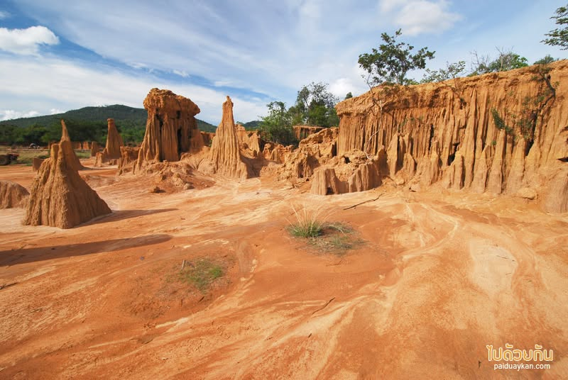
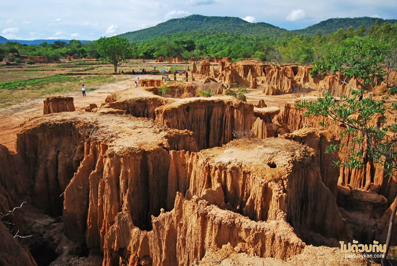
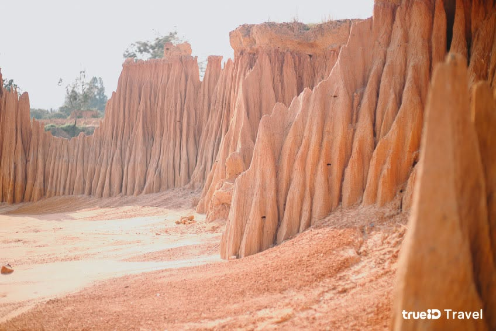

ความเป็นมา
ละลุเป็นแหล่งท่องเที่ยวทางธรรมชาติ ที่มีภูมิประเทศแปลกตาในจังหวัดสระแก้ว เกิดจากการกัดเซาะของน้ำฝนและลม ที่ค่อย ๆ เปลี่ยนแปลงชั้นดิน จนเกิดเป็นเสาดิน กำแพงดิน และรูปร่างต่าง ๆ ที่มีความสวยงาม
ลักษณะของละลุมีความโดดเด่น และแตกต่างจากสถานที่ท่องเที่ยวทั่วไป เพราะรูปร่างของดินในแต่ละบริเวณ มีรูปทรงที่ไม่เหมือนกัน ทำให้เกิดทัศนียภาพที่น่าสนใจ
ละลุจึงได้รับความสนใจจากนักท่องเที่ยว ที่ต้องการสัมผัสธรรมชาติ ชมภูมิประเทศที่แปลกตา และถ่ายภาพเก็บไว้เป็นที่ระลึก
ที่ตั้ง
ละลุตั้งอยู่บริเวณบ้านเนินขาม และบ้านคลองยาง ตำบลทัพราช อำเภอตาพระยา จังหวัดสระแก้ว เป็นแหล่งท่องเที่ยวทางธรรมชาติ ที่มีเอกลักษณ์ของพื้นที่อย่างชัดเจน
จังหวัด
สระแก้ว
อำเภอ
ตาพระยา
ตำบล
ทัพราช
ประเภทสถานที่
แหล่งท่องเที่ยวทางธรรมชาติ
ละลุเกิดขึ้นได้อย่างไร?
ละลุเกิดจากการเปลี่ยนแปลงของชั้นดิน ตามธรรมชาติ โดยมีน้ำฝนและลม เป็นปัจจัยสำคัญที่ช่วยกัดเซาะ พื้นผิวดินเป็นเวลานาน
ชั้นดินที่มีความแข็งแรงแตกต่างกัน จะถูกกัดเซาะไม่เท่ากัน จึงทำให้บางส่วนคงอยู่ และกลายเป็นเสาดินหรือกำแพงดิน ในขณะที่พื้นที่บางส่วนถูกกัดเซาะออกไป
เมื่อกระบวนการนี้เกิดขึ้นต่อเนื่อง เป็นระยะเวลานาน จึงทำให้เกิดรูปร่างภูมิประเทศ ที่มีลักษณะโดดเด่นและแปลกตา
ลักษณะภูมิประเทศ
ละลุมีลักษณะเป็นเสาดิน หน้าผา และแนวกำแพงดิน ที่มีรูปทรงแตกต่างกันไปในแต่ละพื้นที่
เมื่อมองจากระยะไกล รูปร่างของชั้นดินบางจุด อาจมีลักษณะคล้ายภูเขา กำแพง หรือสิ่งก่อสร้าง ทำให้เกิดความน่าสนใจในการเดินชม
ความแตกต่างของรูปทรง เป็นสิ่งที่ทำให้ละลุ มีเอกลักษณ์และเหมาะกับ การถ่ายภาพธรรมชาติ
การเที่ยวชมละลุ
พื้นที่ละลุมีลักษณะเป็นแหล่งท่องเที่ยว ทางธรรมชาติและมีเส้นทางบางช่วง ที่เป็นพื้นที่ธรรมชาติ นักท่องเที่ยวจึงสามารถใช้บริการ รถนำเที่ยวของชุมชนได้
การเที่ยวชมโดยรถอีแต๊ก ช่วยให้นักท่องเที่ยวเดินทาง เข้าไปชมพื้นที่ต่าง ๆ ได้สะดวก และสามารถเรียนรู้เรื่องราวของละลุ จากคนในชุมชน
นอกจากนี้ยังเป็นการสนับสนุน การท่องเที่ยวโดยชุมชน และช่วยสร้างรายได้ให้กับคนในพื้นที่
กิจกรรมที่น่าสนใจ
- ชมเสาดินและกำแพงดิน
- นั่งรถอีแต๊กชมพื้นที่
- ถ่ายภาพธรรมชาติ
- เดินชมภูมิประเทศ
- เรียนรู้กระบวนการกัดเซาะของดิน
- สัมผัสวิถีชีวิตและการท่องเที่ยวของชุมชน
การถ่ายภาพ
ละลุเป็นสถานที่ที่เหมาะสำหรับ การถ่ายภาพธรรมชาติ เนื่องจากมีเสาดินและกำแพงดิน ที่มีรูปร่างแตกต่างกัน
นักท่องเที่ยวสามารถถ่ายภาพ ได้ทั้งภาพมุมกว้างของภูมิประเทศ ภาพรายละเอียดของเสาดิน รวมถึงภาพระหว่างการเดินทาง ด้วยรถนำเที่ยวของชุมชน
ช่วงเช้าและช่วงเย็น เป็นช่วงที่เหมาะกับการถ่ายภาพ เนื่องจากแสงธรรมชาติ ช่วยสร้างเงาและมิติให้กับพื้นผิวดิน
ช่วงเวลาที่เหมาะสำหรับเที่ยว
ช่วงเช้าและช่วงเย็น เป็นช่วงเวลาที่เหมาะสำหรับ การเที่ยวชมและถ่ายภาพ เพราะอากาศโดยทั่วไปไม่ร้อนมาก
ผู้ที่เดินทางมาเที่ยวควรเตรียม น้ำดื่ม หมวก หรืออุปกรณ์ป้องกันแดด โดยเฉพาะหากต้องใช้เวลาเดินชม บริเวณกลางแจ้ง
แหล่งเรียนรู้ทางธรรมชาติ
ละลุสามารถใช้เป็นแหล่งเรียนรู้ เกี่ยวกับการเปลี่ยนแปลงของภูมิประเทศ และกระบวนการกัดเซาะตามธรรมชาติ
ผู้เข้าชมสามารถสังเกตชั้นดิน และรูปร่างของพื้นที่จริง เพื่อทำความเข้าใจว่า น้ำฝน ลม และเวลา สามารถเปลี่ยนแปลงภูมิประเทศได้อย่างไร
การท่องเที่ยวโดยชุมชน
การท่องเที่ยวละลุมีความเชื่อมโยง กับชุมชนในพื้นที่ โดยเฉพาะการให้บริการรถนำเที่ยว และการดูแลนักท่องเที่ยว
นักท่องเที่ยวจึงมีโอกาสได้สัมผัส ทั้งธรรมชาติและวิถีชีวิตของคนในพื้นที่ ไปพร้อมกัน
การมีส่วนร่วมของชุมชน ยังช่วยให้การท่องเที่ยว สร้างประโยชน์กลับคืนสู่คนในท้องถิ่น
จุดเด่นของสถานที่
- เป็นแหล่งท่องเที่ยวทางธรรมชาติที่มีเอกลักษณ์
- มีเสาดินและกำแพงดินรูปร่างแปลกตา
- เกิดจากกระบวนการกัดเซาะของธรรมชาติ
- เหมาะสำหรับการถ่ายภาพ
- สามารถเที่ยวชมด้วยรถอีแต๊กของชุมชน
- เป็นแหล่งเรียนรู้เรื่องธรรมชาติและภูมิประเทศ
เหมาะสำหรับใคร?
- คนที่ชอบท่องเที่ยวธรรมชาติ
- คนที่ชอบถ่ายภาพ
- นักเรียนและนักศึกษาที่สนใจธรรมชาติ
- ครอบครัวที่ต้องการสถานที่ท่องเที่ยว
- ผู้ที่สนใจสถานที่ท่องเที่ยว Unseen
- ผู้ที่ต้องการสัมผัสวิถีชีวิตของชุมชน
ความสำคัญต่อจังหวัดสระแก้ว
ละลุช่วยเพิ่มความหลากหลาย ให้กับแหล่งท่องเที่ยวของจังหวัดสระแก้ว โดยเป็นสถานที่ที่มีจุดเด่น ด้านภูมิประเทศและธรรมชาติ
นอกจากความสวยงามแล้ว การท่องเที่ยวละลุยังเชื่อมโยง กับชุมชนในพื้นที่ ทำให้เกิดกิจกรรมและรายได้จากการท่องเที่ยว
ละลุจึงเป็นอีกหนึ่งสถานที่ ที่สะท้อนเอกลักษณ์ของจังหวัดสระแก้ว ในด้านการท่องเที่ยวทางธรรมชาติ
การเดินทาง
ละลุตั้งอยู่ในอำเภอตาพระยา จังหวัดสระแก้ว นักท่องเที่ยวสามารถเดินทาง ด้วยรถยนต์ไปยังพื้นที่ท่องเที่ยว และติดต่อชุมชนเพื่อใช้บริการ รถนำเที่ยวได้
ก่อนเดินทางควรตรวจสอบ เส้นทาง สภาพอากาศ และรูปแบบการให้บริการของชุมชน เพื่อวางแผนการท่องเที่ยวให้เหมาะสม
สิ่งที่ควรรู้ก่อนเที่ยว
- ควรเตรียมน้ำดื่มและอุปกรณ์ป้องกันแดด
- สวมรองเท้าที่เหมาะกับการเดินบนพื้นที่ธรรมชาติ
- ควรปฏิบัติตามคำแนะนำของชุมชน
- ไม่ควรปีนหรือทำลายเสาดินและพื้นที่ธรรมชาติ
- ช่วยกันรักษาความสะอาดของพื้นที่
ทำไมถึงน่าสนใจ?
ละลุมีความน่าสนใจ เพราะเป็นสถานที่ที่แสดงให้เห็น ความมหัศจรรย์ของธรรมชาติ ผ่านรูปร่างของเสาดิน และภูมิประเทศที่เกิดขึ้นตามธรรมชาติ
นักท่องเที่ยวสามารถชมวิว ถ่ายภาพ นั่งรถอีแต๊ก และเรียนรู้เกี่ยวกับกระบวนการ ทางธรรมชาติไปพร้อมกัน
นอกจากนี้ยังได้สัมผัส การท่องเที่ยวที่มีชุมชนเข้ามามีส่วนร่วม ทำให้การเดินทางมีทั้งความรู้ ประสบการณ์ และความประทับใจ
ข้อมูลสรุป
ชื่อสถานที่
ละลุ
ประเภท
แหล่งท่องเที่ยวทางธรรมชาติ
จังหวัด
สระแก้ว
อำเภอ
ตาพระยา